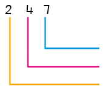
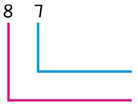
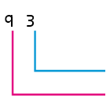
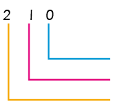
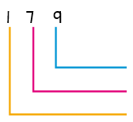
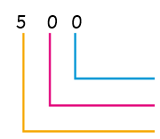

5.

6.

7.

8.

9.

10.

Exercise 2
Write the digits that represent the place values of the following numbers:
1.426 = blank hundreds blank tens blank ones
2.126 = blank hundreds blank tens blank ones
3.358 = blank hundreds blank tens blank ones
4.71 = blank hundreds blank tens blank ones
5.4 = blank hundreds blank tens blank ones
6.215 = blank hundreds blank tens blank ones
7.309 = blank hundreds blank tens blank ones
8.186 = blank hundreds blank tens blank ones
9.231 = blank hundreds blank tens blank ones
10. 400 = blank hundreds blank tens blank ones
21